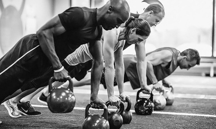

Fitness: ¿Qué es? - Consejos para estar en forma y Beneficios
 Marca Registro Buscar
Marca Registro Buscar
¿Qué le sucede? Evalúe sus síntomas y comparta el resultado con un especialista Evaluar
Alimentación Nutrición Dietas Recetas Diccionario de alimentación Diccionario de dietas Belleza y piel Medicina estética Cuidados del pelo Cuidados faciales Cuidados del cuerpo Diccionario de belleza Sexualidad Sexualidad masculina Sexualidad femenina Sexualidad en pareja Diccionario de sexualidad Ejercicio físico Diccionario de deporte Familia Mi bebé Mi niño Adolescencia Mis mayores Diccionario de mi bebé Diccionario de mi niño Diccionario adolescencia Bienestar y mente Mindfulness Medicamentos Más
Más secciones
Salud Laboral Enfermedades Reproducción Fertilidad Embarazo Parto Diccionario de fertilidad Diccionario de parto Diccionario de embarazo Más que pacientes Cuidándote Preguntas y Respuestas Quienes somosAfiliados especiales
Fitness
Home Ejercicio físico Diccionario de deporte FitnessFitness
Diccionario de deporte
Viernes, 09 de Octubre de 2015 - 11:18¿Qué es?
Bajo la acepción fitness se esconden dos definiciones muy vinculadas. En primer lugar, entendemos por fitness el estado de salud física y bienestar que se consigue al llevar una vida sana apoyada en el ejercicio continuado en el tiempo y en una dieta saludable . En segundo lugar, también se define como fitness al conjunto de ejercicios gimnásticos que se repiten varias veces por semana para conseguir una buena forma física . Normalmente estos ejercicios se realizan en espacios deportivos específicos, como los gimnasios.
Los objetivos de esta práctica deportiva son mejorar la resistencia aeróbica, tener mayor flexibilidad, conseguir fuerza muscular, conseguir una fuerza muscular localizada y lograr el equilibro corporal (ha de respetar unos porcentajes de lo que se considera sano en músculos, huesos y grasas).
Durante años el fitness ha estado en auge en Estados Unidos, pero su trascendencia ya se ha extendido a Europa y algunos países de América del Sur, como Colombia.
Los deportistas que acuden a esta disciplina deportiva suelen realizar series de carreras, sentadillas, flexiones y saltos combinados con ejercicios de disciplinas como el breakdance.
Beneficios
Si el deportista mantiene un programa de ejercicios equilibrado, las ventajas de esta disciplina son:
Mejora de la resistencia aeróbica. Las series de ejercicios se realizan varias veces por semana por lo que consigue aumentar el desarrollo del sistema cardiorrespiratorio y, por tanto, la resistencia.Fortalece la condición física , tanto interna como externa, lo que implica también un aumento de la autoestima de la persona que lo practica.
Reduce el riesgo de desarrollar enfermedades como la obesidad o riesgos cardiovasculares , como tener el colesterol alto , hipertensión , etc.
Evita el estrés . La práctica de este tipo de actividades deportivas de alto impacto ayuda a que el deportista esté relajado y tenga menos riesgo de sufrir estrés o depresión .
El fitness ofrece numerosas ventajas, tanto para mejorar la condición física como anímica.
¿Cómo distingo si una actividad es considerada fitness?
Para que una actividad entre dentro de la categoría fitness tiene que realizarse de forma regular y estar plenamente ligado a una buena alimentación y a unos hábitos de vida saludables. Además, debe cumplir una serie de criterios:
Algunos de los objetivos de este tipo de entrenamiento es mejorar la resistencia y la fuerza del individuo . Para conseguirlo es indispensable que la rutina deportiva se realice como mínimo dos o tres veces a la semana .Es imprescindible que la persona que realice fitness tenga una buena condición física y presente resistencia muscular localizada . Durante el tiempo que se practica la actividad el deportista tendrá que disponer de la resistencia necesaria para mantener un músculo en tensión durante un periodo de tiempo prolongado o repetir varias veces la misma serie de movimientos.
Tener flexibilidad . Estos ejercicios requieren que se realice mucho calentamiento por lo que el deportista deberá tener flexibilidad en todo el cuerpo.
El fitness necesita que el deportista tenga una forma física armoniosa y mantenga unos niveles de grasa normal. En hombres entre el 18 y el 20 por ciento y en mujeres entre el 22 y el 24 por ciento.
Para conseguir una buena forma física el fitness se apoya en el uso de algunas máquinas. Las más usadas son la elíptica, bicicleta estática, los remos, el simulador de escaleras y las cintas de correr. Además, también suelen utilizar aparatos de musculación con el objetivo de reforzar el entrenamiento muscular y aumentar la fuerza para realizar las series de ejercicios.
Fitness vs culturismo
En Estados Unidos es frecuente que en las competiciones de culturismo haya una categoría denominada fitness. Sin embargo, aunque la aparición del fitness ha desplazado la participación de las mujeres en culturismo no son similares ya que en el culturismo se compite por estética, mientras que en fitness las participantes tienen que realizar una serie de ejercicios.
Las principales diferencias entre estos dos conceptos son:
El fitness pretende la mejora del estado del cuerpo mediante el entrenamiento de los músculos . El culturismo sólo pretende mejorar los músculos.El fitness implica en algunos casos que se pierda masa corporal . El culturismo requiere que se aumente la masa corporal.
En fitness los deportistas combinan ejercicios aeróbicos con anaeróbicos , mientras que en el culturismo se realizan principalmente ejercicios anaeróbicos de fuerza.
Ver también:
Una vida fitness saludable con las recetas de Vikika
Fitness: puesta a punto en el gimnasio
HIIT para mejorar la resistencia y quemar grasas
Las diferencias del 'power walking' frente al 'running'
Fecha Publicación Viernes, Octubre 9, 2015 - 13:18 Tags Perder peso Adelgazar Noticia Destacada en Galería Categoria Diccionario de deporte Cómo evitar las lesiones de cadera cuando eres runner Nutrición y complementos alimenticios certificados como apoyo a tu rendimiento deportivo y vida saludable Del sol a las piscinas: ¿cómo cuidar tus ojos en verano? Que el cáncer de próstata no frene tu vida
Tags relacionados:
Perder peso Adelgazar x Quiénes somos Política de privacidad Política de cookies Normas de participación y uso Contacto © 2021 Unidad Editorial Revistas, S.L.U. Todos los derechos reservados. Avalado por: Nosotros subscribimos los Principios del código HONcode: Compruébelo aquí.Evaluar
